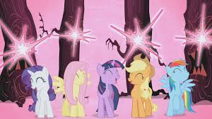
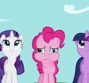
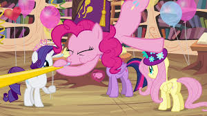

Personality
Exuberance
Pinkie is hyperactive, excitable, quirky, and outgoing, often speaking and acting in non sequiturs. She warmly welcomes new faces such as Twilight Sparkle and Cranky Doodle Donkey. True to the element of laughter she represents, she loves to make ponies smile and laugh.
Pinkie tends to have a lighthearted manner in serious situations, such as stopping to drink chocolate milk raining from a cotton candy cloud when the main characters confront Discord in The Return of Harmony Part 2. As a result, she is often not taken seriously even by her closest friends, who occasionally call her out on her seemingly illogical behavior.
Cartoonish behavior
Pinkie frequently performs cartoonish feats, such as eye-bulging, wild takes, and unusually angled cuts into the frame. Her merry skips resemble Pepé Le Pew's, particularly in Griffon the Brush Off. Her costume and waddle in Dragonshy are reminiscent of Daffy Duck's four-legged body in Duck Amuck.
On several occasions, Pinkie breaks the fourth wall and shows awareness of cinematic elements. For example, at the end of Over a Barrel, she pokes her head through the iris wipe to grumble about Twilight's friendship lesson, and in Magic Duel, she stretches the iris wipe wide open and climbs into the black screen to protest about her vanished mouth, and in Make New Friends but Keep Discord, she gets so excited about Discord buying all the cakes in the bakery, she shakes the camera. In The One Where Pinkie Pie Knows, after Pinkie claims that keeping Cadance and Shining Armor's secret was a "piece of cake", when the screen irises in on her, she shakes her head at the viewers, indicating the contrary.
Love of parties
Pinkie Pie is first introduced as a talented and avid party-thrower. She throws a party for Twilight Sparkle in Friendship is Magic, part 1, a welcome party for Gilda in Griffon the Brush Off, and a birthday party for Gummy in Party of One (and even an "after-birthday party" the following day). Pinkie is even shown to throw parties on completely random occasions, such as a "finish ringing the school bell" party in Castle Mane-ia.
Party cannon
In Sweet and Elite, Pinkie organizes a birthday party for Twilight on very short notice, putting up decorations in very little time with her "party cannon." The cannon would become a running gag throughout the show, up to the point where Pinkie even uses it to fight off the changelings in A Canterlot Wedding - Part 2. The cannon is used again and alluded to in multiple episodes and other media, and a giant cannon appears in My Little Pony The Movie.
Insecurities
On occasion, Pinkie Pie shows an insecure side of her personality, doubting her friends or herself. In Party of One, she believes her friends to be unfaithful, causing her hair to "deflate" and her coat color to fade to a grayish pink. She slowly goes insane as she adopts several inanimate objects as new friends, pretending that they are real.
Skills
Musical abilities
Pinkie frequently performs songs and plays a variety of musical instruments in the series. She plays a one-pony band in Swarm of the Century and Magic Duel, as well as the pipe organ in Castle Mane-ia despite having no prior knowledge of having played said instrument. During an afternoon in Party Pooped, she plays drums—mostly matching those of her human counterpart earlier in Rainbow Rocks—in a traveling band with "Liam T. Walrus", "Paul McCartneigh", and "George Horrsen".
Pinkie Pie – element of laughter
| Kind | Earth pony |
| Sex | Female |
| Residence | Sugarcube Corner, Ponyville Pie Family Rock Farm |
| Occupation |
Baker/caterer/party organizer for Sugarcube Corner Friendship ambassador to Yakyakistan School of Friendship laughter teacher Canterlot gala planner |